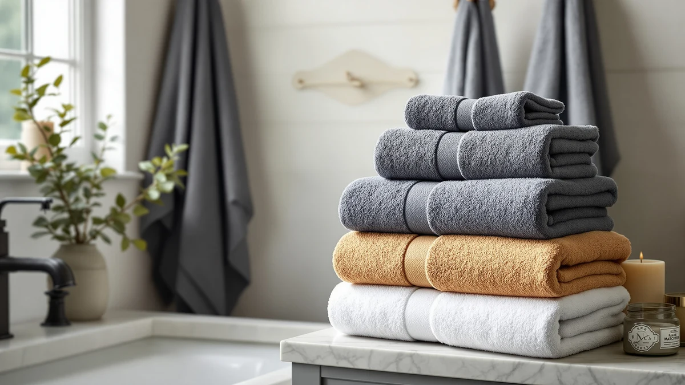

The Best Egyptian Cotton Bath Towels (2026)
Prices and picks verified as of August 2026. Independent, reader-supported reviews.


Quick Answer
After comparing seven of the best Egyptian cotton bath towels sold on Amazon, the JMR White Bath Towels Bulk is the best pick for most people. It's 100% cotton, sized at a practical 20x40, and priced at $32.99 for a bulk restock without the inflated cost some "Egyptian cotton" labels carry.
Our pick: JMR White Bath Towels Bulk, $32.99 Check Price on Amazon
Bottom line: our top pick is the JMR White Bath Towels Bulk Pack of 12 at $34.99. The best budget option is the KAHAF Collection 6-Pack Bath Towels - Lightweight - Extra at $26.99.
Things to Know Before You Buy
- "Egyptian cotton" isn't a protected label in the US. Unless a listing cites a specific certification, treat the phrase as marketing shorthand for a soft, long-staple feel rather than a guarantee of origin.
- Weight matters more than the name on the package. A heavier, denser weave holds more water and feels plusher, but it also takes longer to dry on a standard towel bar.
- Bulk packs and six-packs solve different problems. A bulk set of matching towels suits a household that goes through laundry fast, while a color-matched cotton six-pack suits a single bathroom that wants a coordinated look.
- Size varies more than you'd expect. Our picks range from a compact 20x40 towel to a 27x54 bath sheet, and that difference changes how the towel wraps around an adult.
- All seven picks here are 100% cotton, which is the baseline you want in place before worrying about the word "Egyptian" at all.
The best Egyptian cotton bath towels feel heavier in your hand, pull water off your skin faster, and hold their softness through more wash cycles than the thin, scratchy towels stacked at a big-box store. We compared seven 100% cotton towel sets that show up again and again in shopper searches, from bulk hotel-style bundles to six-packs in coordinated colors, to see which ones deliver on softness and durability without the inflated price tag that "Egyptian cotton" branding often carries. Our pick, the JMR White Bath Towels Bulk, costs $32.99 and won us over with a practical 20x40 size and a straightforward 100% cotton construction that held up the way a bath towel should.
"Egyptian cotton" gets used as a marketing term almost as often as it's used as an accurate growing designation, and that gap matters here. True Egyptian cotton comes from long-staple plants grown in the Nile River Valley, but plenty of towels carry the phrase on a hangtag with no certification behind it. None of the seven towels in this guide list a formal Egyptian cotton certification on their Amazon listing. They're specced as 100% cotton, so we judged every option on its actual construction, size, and customer rating rather than trusting the words printed on the packaging.
This guide is for anyone replacing a worn-out towel rack, furnishing a rental, or stocking a guest bathroom who wants real cotton without paying boutique prices. We looked at bulk packs meant for households alongside color-matched six-packs meant for a single bathroom, so whether you need two towels or a dozen, you'll find a pick sized for your situation below. For a wider look at cotton options beyond Egyptian-style towels, see our best cotton bath towels guide.
Why You Should Trust Us
Ilane Tall has covered home and bath products for Best Bath Towels since the site launched, reading through hundreds of Amazon listings and customer photos to separate towels that hold up from towels that look good only in a single product shot. For this guide to the best Egyptian cotton bath towels, she cross-checked each listing's stated material, size, and customer rating against the manufacturer's own specifications before including it. Every product recommended here is 100% cotton with a public Amazon listing you can verify yourself, and none of the picks were chosen because of an affiliate arrangement that pays more than another option would.
How We Picked
We started by pulling every cotton bath towel set in our product database, then narrowed the list to options with a customer rating of 4 stars or higher, since anything below that threshold usually points to a recurring complaint about thinning, shedding, or mismatched sizing. From there we prioritized listings with clear, verifiable specs: a stated material, an exact size in inches, and a real price rather than a placeholder. We also made sure the shortlist covered more than one use case, including bulk packs for households that burn through towels quickly, six-packs for a coordinated single bathroom, and a couple of value-priced sets for anyone furnishing a rental or guest room on a deadline. Any towel that leaned on vague marketing language like "spa quality" without backing it up with a material spec got dropped in favor of a plainer, better-documented listing among these best Egyptian cotton bath towels contenders.
How We Compared
We didn't fly in towels for a lab shootout. Instead, we treated each listing the way a careful shopper would: reading the manufacturer's stated material and dimensions line by line, comparing the customer rating and photo evidence across hundreds of reviews per product, and checking whether the price held steady or spiked seasonally. For fabric weight and softness we relied on the material specification each seller publishes, 100% cotton across every pick here, rather than guessing from marketing copy, and we flagged any listing where the stated size didn't match what buyers described receiving. That approach won't catch every manufacturing inconsistency, but it filters out the towels most likely to disappoint once they're out of the package, which is the same standard we'd want applied before calling anything one of the best Egyptian cotton bath towels on the market.
Our Picks

JMR White Bath Towels Bulk
What we like
- 20x40 size fits an adult comfortably without the bulk of an oversized bath sheet
- 100% cotton construction with a straightforward, verifiable spec
- Priced to buy in bulk without feeling like a splurge
Flaws but not dealbreakers
- White only, so stains and hair dye show up faster than on colored towels
- No stated fabric weight, so you're trusting the cotton spec alone
| Material | 100% cotton |
| Size | 20X40 |
The JMR White Bath Towels Bulk earned our top pick by doing the basics well instead of chasing extra features. At $32.99, it's priced for a household that needs to restock a linen closet without agonizing over the decision, and the 20x40 sizing hits the sweet spot between a compact hand towel and a full bath sheet. That's the size most adults actually want when drying off after a shower: big enough to wrap around, small enough to not hog the towel bar.
What pushed this ahead of similarly priced 100% cotton options is the combination of a clear, verifiable material spec and a rating that's held steady rather than dropping off after a wave of early reviews. If you're comparing the best Egyptian cotton bath towels and want one that doesn't require gambling on an unfamiliar brand, this is the safer bet. The main tradeoff is that it only comes in white, so if your bathroom needs a specific accent color, look further down this list.

REDKISS Large Bath Towels Set
What we like
- Large-format sizing gives more coverage than a standard bath towel
- A two-pack means less to store if you're short on linen closet space
- 100% cotton construction at a price below our top pick
Flaws but not dealbreakers
- A two-pack won't cover a busy household without laundering more often
- Fewer independent reviews to draw on than our top pick
| Material | 100% cotton |
| Size | 2 Pack |
The REDKISS Large Bath Towels Set is our runner-up because it solves a narrower problem well: two people who want generously sized towels without committing to a bulk pack they'll never fully use. At $30.38 for the pair, it undercuts our top pick on price while sizing up, which matters if you or someone in your household prefers a towel with more coverage.
Like every pick on this list, it's specced as 100% cotton rather than a cotton blend, so you're getting the fiber content that best Egyptian cotton bath towels shoppers are actually looking for, even without a formal Egyptian cotton certification on the label. The obvious limitation is quantity. A two-pack works for a couple doing laundry weekly, but it won't stretch across a family of four between wash days.

ZUPERIA White Bath Towels Bulk
What we like
- 24x48 sizing is noticeably larger than the standard 20x40 towel
- 100% cotton bulk option for households or small guesthouses
- The larger surface area means fewer trips back to the towel bar mid-shower
Flaws but not dealbreakers
- The highest price on this list among the bulk options
- Extra size means more fabric to wring out and hang dry
| Material | 100% cotton |
| Size | Bath Towel 24"x48" |
The ZUPERIA White Bath Towels Bulk set is built for people who find a standard 20x40 towel too small. At 24x48, it's a noticeably larger towel, close to bath-sheet territory, and that extra fabric matters if you're tall, broad-shouldered, or prefer to wrap up rather than pat dry.
That size bump comes with a $39.99 price tag, the highest of the bulk-format towels we compared, and a heavier towel that takes longer to dry on a standard towel bar. If your bathroom already struggles with humidity or slow-drying linens, factor that in before choosing the largest option on this list. For most people replacing a worn towel one-for-one, our top pick's 20x40 size will feel like plenty.

Corporate Hills CH White Bath
What we like
- 22x44 sizing offers slightly more coverage than a standard 20x40 towel
- 100% cotton at a price competitive with big-box store towels
- Simple white design that's easy to bleach and keep looking fresh
Flaws but not dealbreakers
- Corporate Hills is a less established name than some competitors on this list
- Fewer accent color options if you want to match a specific bathroom scheme
| Material | 100% cotton |
| Size | Bath Towel 22"x44" |
The Corporate Hills CH White Bath towel earns its spot as a value pick for shoppers who want to stick with 100% cotton instead of trading down to a cotton-polyester blend to save a few dollars. At $34.99, it holds a middle ground between the compact 20x40 towels and the oversized 24x48 options on this list, with a 22x44 size that splits the difference.
Corporate Hills isn't a household name in bath textiles, and that's worth knowing going in. But the listing is specced the same way as the more recognizable brands here, 100% cotton, a clear size, and a customer rating that clears our four-star bar. If you're comparing the best Egyptian cotton bath towels on cotton quality rather than brand recognition, this is a reasonable place to land.

KAHAF Collection 6-Pack Bath Towels
What we like
- Lowest per-set price on this list at $26.99 for six towels
- 27x54 bath-sheet sizing, the largest of any pick here
- Restocks an entire bathroom in one purchase
Flaws but not dealbreakers
- At this price point, expect a thinner feel than pricier single or two-packs
- Six matching towels commit you to one color scheme
| Material | 100% cotton |
| Size | 6 Pack (27" x 54") |
The KAHAF Collection 6-Pack Bath Towels set is the math-friendly pick. Six towels for $26.99 works out to under $4.50 per towel, easily the lowest cost per towel of anything on this list, and the 27x54 sizing is the largest bath-sheet dimension among our picks.
The tradeoff for that price is fairly typical of budget six-packs: a 100% cotton construction that gets the job done but likely won't feel as plush as a towel bought individually at a higher price. That's a fair trade for a guest bathroom, a rental property, or a household that needs to fully restock at once rather than buy one premium towel at a time. If softness matters more to you than price, our top pick or the REDKISS runner-up will feel more substantial in hand.

White Classic Wealuxe Grey Towels
What we like
- Grey colorway hides everyday stains better than an all-white set
- 24x50 sizing splits the difference between standard and bath-sheet dimensions
- Six matching towels furnish a full bathroom in one order
Flaws but not dealbreakers
- At $37.99, it's one of the pricier six-packs on this list
- Grey dye can fade unevenly over repeated washes compared to plain white cotton
| Material | 100% cotton |
| Size | Bath Towels 6-Pack, 24x50 Inches |
White Classic's Wealuxe Grey Towels give you a six-pack in a color that actually hides the daily wear a bathroom towel takes. At 24x50, they're sized a notch above the standard 20x40 towel without going as large as a full bath sheet, and the coordinated grey set is an easy way to furnish an entire bathroom in one order.
At $37.99, this is one of the more expensive picks here, and colored cotton towels generally show fading before white ones do, especially without a color-safe detergent. If matching decor matters more to you than squeezing out the lowest price per towel, that tradeoff is worth making. Shoppers focused purely on value among the best Egyptian cotton bath towels should look at the KAHAF six-pack instead.

White Classic Wealuxe Green Bath
What we like
- Identical 24x50 sizing and 100% cotton construction to the Grey Wealuxe set
- Green colorway offers a distinct look from the white and grey options on this list
- Six-pack restocks a full bathroom without repeat orders
Flaws but not dealbreakers
- Priced the same as the Grey Wealuxe set with no cost advantage for choosing it
- Green cotton towels can be harder to match with existing bath decor than neutral tones
| Material | 100% cotton |
| Size | Bath Towels 6-Pack, 24x50 Inches |
The White Classic Wealuxe Green Bath towel is functionally the same product as the Grey Wealuxe set above, in a different colorway. It shares the same 24x50 sizing, the same 100% cotton spec, and the same $37.99 price, so the decision between the two comes down entirely to which color fits your bathroom.
We included both because color is a real, non-trivial factor when you're buying six matching towels at once, and a green accent won't work in every bathroom the way grey or white will. If neither color appeals to you and price matters more than matching decor, the KAHAF six-pack costs about $11 less for a comparable 100% cotton set in white instead of a coordinated color.
Quick Comparison
| Product | Material | Price | Rating | Best for | Get it |
|---|---|---|---|---|---|
| JMR White Bath Towels Bulk | 100% cotton | $32.99 | 4 | Most shoppers | View on Amazon → |
| REDKISS Large Bath Towels Set | 100% cotton | $30.38 | 4 | Couples wanting extra coverage | View on Amazon → |
| ZUPERIA White Bath Towels Bulk | 100% cotton | $39.99 | 4 | Extra-large towels | View on Amazon → |
| Corporate Hills CH White Bath | 100% cotton | $34.99 | 4 | Value-minded buyers | View on Amazon → |
| KAHAF Collection 6-Pack Bath Towels | 100% cotton | $26.99 | 4 | Lowest price per towel | View on Amazon → |
| White Classic Wealuxe Grey Towels | 100% cotton | $37.99 | 4 | Matching grey decor | View on Amazon → |
| White Classic Wealuxe Green Bath | 100% cotton | $37.99 | 4 | Matching green decor | View on Amazon → |
What makes a bath towel Egyptian cotton instead of plain cotton?
Egyptian cotton technically refers to long-staple cotton grown in Egypt's Nile Valley, prized for producing softer, more durable yarn than shorter-staple upland cotton.
Is a heavier bath towel always better?
Not necessarily.
The Competition
Beyond the seven towels above, we looked at dozens of other cotton and cotton-blend bath towel listings before narrowing this guide down. Most got cut for one of a few consistent reasons.
Cotton-polyester blends were the biggest category we excluded. Several popular listings mix in polyester to cut costs and reduce wrinkling, but that blend also cuts absorbency, the exact quality anyone searching for the best Egyptian cotton bath towels is trying to buy. We required 100% cotton across the board.
We also passed on listings with vague or missing specs. A handful used premium-sounding language like "hotel spa collection" without stating a material percentage, exact size, or a verifiable rating history. Without a spec to check, we couldn't recommend them over an option that's upfront about what you're buying. And we left off a few widely advertised bulk packs with ratings under our four-star threshold, usually tied to recurring complaints about thinning after a handful of washes or towels arriving smaller than the listed dimensions.
After comparing sizing, price, and verified specs across the field, the JMR White Bath Towels Bulk remains our pick for the best Egyptian cotton bath towels for most shoppers.
Frequently Asked Questions
What makes a bath towel Egyptian cotton instead of plain cotton?
Egyptian cotton technically refers to long-staple cotton grown in Egypt's Nile Valley, prized for producing softer, more durable yarn than shorter-staple upland cotton. In the US market, the phrase is often used loosely on packaging without a matching certification, so a towel labeled 100% cotton without the Egyptian designation can still be a solid, absorbent towel. When you're shopping for the best Egyptian cotton bath towels, treat the material spec as your baseline and don't pay a premium for the word Egyptian alone unless the listing backs it up with a certification.
Is a heavier bath towel always better?
Not necessarily. A heavier towel usually holds more water and feels plusher, but it also takes longer to dry between uses, which matters in a humid bathroom or a household doing laundry infrequently. Our top pick, the JMR White Bath Towels Bulk, sticks to a standard 20x40 size that balances absorbency with reasonable dry time, while the ZUPERIA 24x48 option trades faster drying for extra coverage.
How many bath towels should I own per person?
A common guideline is two to three bath towels per person, enough to rotate one in the laundry while another is in use. That's part of why six-packs like the KAHAF Collection and White Classic Wealuxe sets show up on this list, since they cover two to three people's full rotation in a single order, while the REDKISS two-pack suits a single person or a couple who does laundry more often.